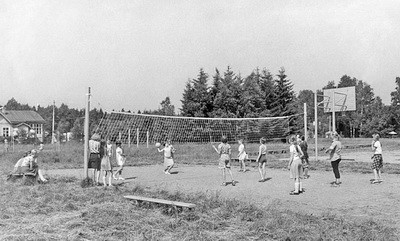
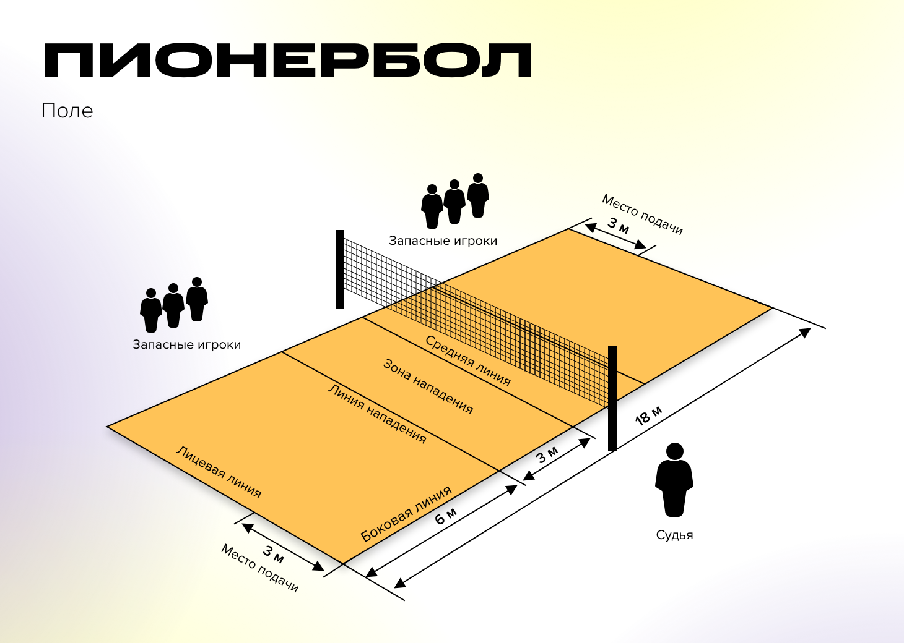

switch language
switch language
Описание игры
Пионербол, как спортивная игра, изначально был популярен в советских пионерских лагерях и школах. Это командная игра, похожая на волейбол, но с некоторыми отличиями в правилах.
Появился в 30-х годах в СССР, нам неизвестен автор этой игры и конкретное место зарождения её. Пионербол представлял собой своеобразный «дворовый» вариант игры в волейбол. Играли тем же волейбольным мячом, а порой даже и без сетки. Игра была особенно любима детьми от 10 до 16 лет, и распространена в пионерских лагерях, также в неё играли на спортивных площадках и даже в школе на уроках физкультуры.
Такие игры, как пионербол, приучали детей к спорту и подвижному образу жизни. Они помогали чувствовать себя частью общества, команды, помогали найти друзей. Совместное активное времяпрепровождение сплачивало ребят и занимало их досуг, отвлекая от проказ и шалостей.
Правила игры
Игра ведётся с волейбольным мячом на волейбольной площадке. В каждой команде обычно по 6 человек. Площадка по количеству игроков условно разделена на 6 зон.
Игрок задней линии, находясь в пределах площадки в дальнем правом углу, делает бросок через сетку на половину поля команды противника. Один из игроков противоположной команды должен поймать мяч и, сделав не более трёх шагов или одной передачи мяча и двух шагов на своей половине площадки, перебросить его через сетку обратно на половину поля первой команды. Один из игроков первой команды также должен поймать мяч и, сделав не более трёх шагов или одной передачи мяча и двух шагов, перебросить его на половину поля команды соперника. И так далее до тех пор, пока мяч не упадёт на землю — тогда бросившей мяч команде засчитывается одно очко.
Мяч считается проигранным принимающей командой, а подающая команда теряет подачу, если:
- Мяч коснулся площадки;
- Игрок сделал более трёх шагов с мячом в атаке;
- Игрок прикоснулся к сетке;
- Игрок прикоснулся к мячу два раза подряд;
- игрок перешёл через среднюю линию;
- мяч перелетел над сеткой, но приземлился за линиями, ограничивающими площадку;
- мяч перелетел под сеткой или коснулся предметов, находящихся вне пределов площадки.
Исключение: если мяч команды попал в сетку, игроки имеют право коснуться мяча 3 раза.
- Игрок заступил за линию подачи.
- При подаче мяч не перелетел через сетку.
В случае если мяч коснулся сетки, но перелетел на сторону принимающей команды, по предварительной договоренности между командами могут быть такие варианты: повтор подачи, переход подачи или начисление выигрышного очка принимающей команде.
Как и в волейболе, игроки перемещаются по площадке в следующую зону по часовой стрелке после выигрыша подачи. После набора определённого количества очков (обычно 10, 15 или 25 при минимальном перевесе над соперником в 2 очка) команды меняются сторонами поля, и разыгрывается вторая партия. Если результат после двух партий равный (1:1), то назначается третья партия. Право первой подачи в матче определяется жеребьёвкой, после каждой партии происходит смена сторон и первой подаёт противоположная команда. В середине решающей (третьей) партии производится смена сторон, подачу после смены производит тот же игрок. При подаче игрок отходит на заднюю линию (линию аута) и перебрасывает мяч через сетку.
Преимущество этой игры в её простоте, динамичности и одновременно с этим «гибкости». Если желающих было 10 человек, то играли командами 5 на 5, а если больше – то и 8 на 8. В общем, как правило, места на площадке хватало всем желающим, и это было самое главное! А состав игроков при этом мог быть разновозрастным. Правила могли также видоизменяться: можно было играть партии до 10, 15 или 20 очков – как было удобно в данный конкретный момент, а также заранее менять количество возможных пасов и шагов на своей площадке.
Разновидности
- Для слепых детей - в команду входят слепые либо слабовидящие игроки и обязательно один зрячий, используется озвученный мяч, а на сетку привешиваются колокольчики.
- С двумя мячами - задача не допустить одновременного нахождения обоих мячей на одной половине площадки.
Наше время
Пионербол до сих пор жив. В наши дни он включён в программу средних школ по физической подготовке. Считается, что эта игра обучает умению работать в коллективе, развивает навык ориентирования и даёт направление для дальнейшего спортивного роста. Между тем, тех, кто дал имя пионерболу, встретить не так просто. Всесоюзная пионерская организация имени Ленина в девяностых расформирована и сегодня поддерживается лишь силами энтузиастов. Что ж, игра переросла эпоху. Сегодня детям совсем не важно, почему пионербол называется именно так. А между собой они прозвали его «ленивым волейболом».Другие разновидности волейбола
- Класический вид спорта, командная спортивная игра, в процессе которой две команды соревнуются на специальной площадке, разделённой сеткой, стремясь направить мяч на сторону соперника таким образом, чтобы он приземлился на площадке противника (добить до пола), либо чтобы игрок защищающейся команды допустил ошибку. При этом для организации атаки игрокам одной команды разрешается не более трёх касаний мяча подряд (в дополнение к касанию на блоке).
- На снегу разновидность волейбола, в которой команды соревнуются на покрытой снегом площадке.
- Пляжный популярный вид спорта, игра на разделённой высокой сеткой песчаной площадке, в которой две команды, находящиеся по разные стороны сетки, перебрасывают через неё мяч, как правило, руками, с целью приземлить его на чужой половине и не допустить падения мяча на своей половине поля.
- Сидя разновидность волейбола для спортсменов с поражениями опорно-двигательного аппарата, паралимпийский вид спорта.